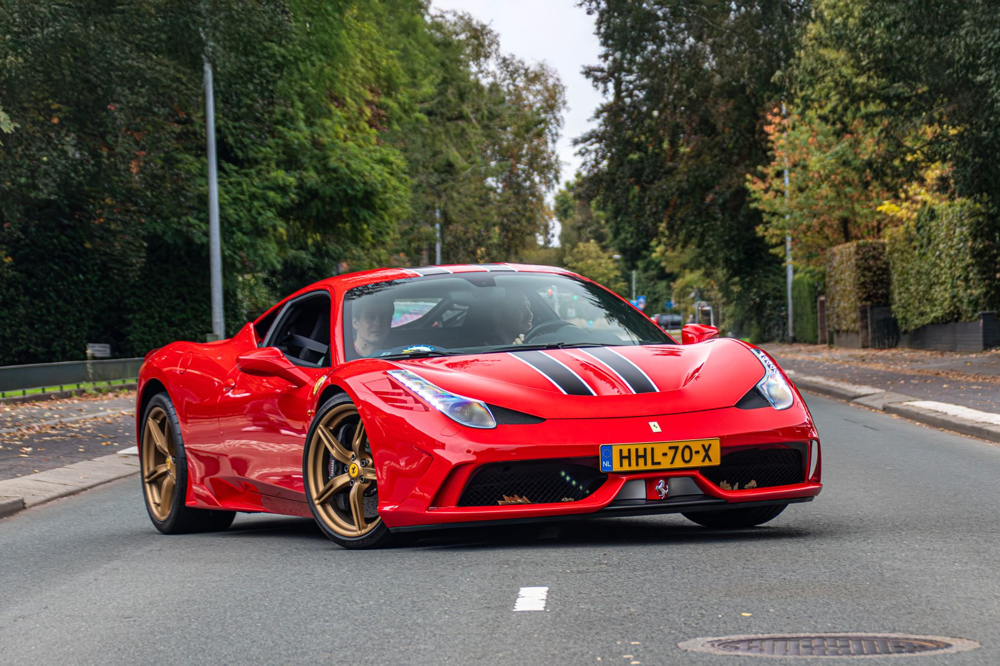

Informatie
Waarom is FerrariOwnersClubNL een stichting?
Antwoord: Bij de voorbereidingen voor deze nieuwe club is door de verantwoordelijke medewerkers van de Ferrari fabriek aangegeven dat oprichting van een nieuwe Ferrari Owners Club officieel via akten en overeenkomsten met de fabriek in Maranello moest geschieden.
Men stelde een rechtsvorm als voorwaarde en in overleg met deze contactpersonen werd derhalve gekozen voor een stichting.
Waarom is FerrariOwnersClubNL niet gelieerd aan Ferrari S.p.A ?
Antwoord: De belangrijkste reden hiervoor is gelegen in het feit dat de fabriek -mochten we een officiële club onder vleugels van Ferrari willen worden-ons in ons oprichtingsjaar verplicht(te) te voldoen aan een groot aantal eisen. Een aantal eisen was voor ons toen onacceptabel.
Een van de eisen was het periodiek verplicht overdragen aan de fabriek van naam-adres-woonplaats (NAW) gegevens en auto gegevens.
Dit zou volgens ons niet alleen onwenselijk zijn maar ook nog volledig in strijd zijn met de Nederlandse en Europese privacy regelgeving.
Wij konden ons niet voorstellen dat donateurs het op prijs zouden stellen dat wij telkenmale jaarlijks verplicht informatie zouden verstrekken aan de fabriek.
Kan ik lid worden van de FerrariOwnersClubNL?
Antwoord: Nederlandse regelgeving stelt dat een stichting geen leden kent, alleen donateurs en dat iedereen donateur kan zijn.
Je kunt daarom geen lid worden van de FerrariOwnersClubNL maar alleen donateur. Het heet nu even anders !
Wie doet WAT in de FerrariOwnersClubNL?
Het team van FerrariOwnersClubNL bestaat zo mogelijk uit 3 of 4 bestuursleden en een aantal medewerkers:
Bestuur
- Mel
- Eric
- Joop
Medewerkers
- Tarekvideo
- Marcfotografie
- ChrisFacebook